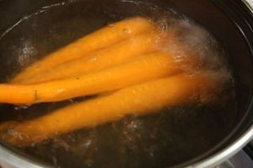
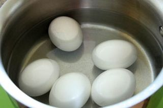
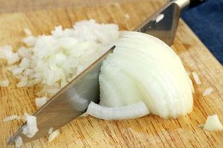
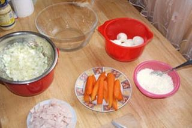
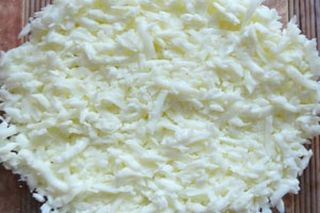
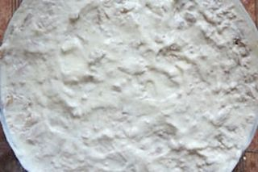
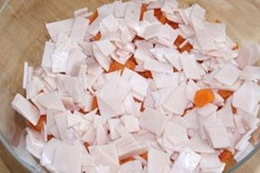
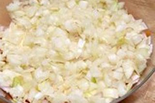
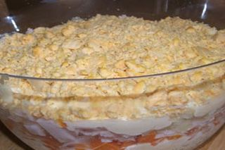

Шаг 1: подготавливаем морковь.

В первую очередь с помощью кухонной щетки тщательно промываем морковь. Затем кладем ее в небольшую кастрюльку, заливаем обычной проточной водой, так чтобы уровень жидкости был выше овоща на 7–8 сантиметров, и ставим на средний огонь.
После закипания варим морковь до мягкости, на это уйдет примерно 30–40 минут, в зависимости от сорта. Периодически проверяем ее готовность столовой вилкой. Если зубцы входят без напора, помогая себе шумовкой, выкладываем морковку в глубокую тарелку и остужаем до комнатной температуры возле открытого окна.
Шаг 2: подготавливаем куриные яйца.

Одновременно с морковью подготавливаем куриные яйца. Кладем их в небольшой сотейник и заливаем проточной водой, выше уровня на 5–7 сантиметров.
Туда же добавляем по паре столовых ложек соли и 9 % уксуса. После закипания варим яйца вкрутую 10–12 минут, затем при помощи шумовки перекладываем их в миску с ледяной водой и остужаем до комнатной температуры.
Пока отваренные продукты остывают, отправляем в морозильную камеру пару плавленых сырков на 25–30 минут и доводим до кипения полный очищенной воды чайник.
Шаг 3: подготавливаем репчатый лук.

В это же время занимаемся репчатым луком, очищаем его от кожуры, промываем, сушим бумажными кухонными полотенцами, выкладываем на разделочную доску и нарезаем кубиками размером до 1 сантиметра.
Затем перекладываем нарезку в дуршлаг с мелкой сеткой и устанавливаем его на поверхность небольшой миски. После этого ошпариваем нарезанный лук до смягчения кипятком из чайника и оставляем его в таком виде до момента использования, чтобы полностью остыл и обсох.
Шаг 4: готовим салат с плавленым сыром.

После того как отваренные ингредиенты остынут, можно приступать к заключительному этапу приготовления блюда. Яйца очищаем от кожуры, промываем и сушим. Отделяем белки от желтков и натираем их на мелкой или средней терке по отдельным глубоким тарелкам.
С моркови снимаем кожицу, а с ветчины пищевую оболочку, по очереди кладем их на разделочную доску и нарезаем мелкими кубиками или тонкими пластами.
Достаем из морозильной камеры плавленый сыр, снимаем с него алюминиевую фольгу и натираем на крупной терке в отдельную небольшую миску, должна получиться рыхлая масса.

Потом берем салатницу, выкладываем на ее дно ровным слоем яичный белок.

Сверху кладем измельченный плавленый сыр. Смазываем его щедрой порцией майонеза, толщиной примерно в 1 сантиметр.

Затем распределяем на нем в художественном беспорядке кубики моркови и поверх них нарезанную ветчину.

Наносим на эти продукты очередную порцию майонеза и посыпаем его слой уже остывшим репчатым луком.

Повторно распределяем на поверхности нарезанного овоща майонез, в этот раз толщину его слоя можно уменьшить до 5 миллиметров, и посыпаем готовый салат яичным желтком.
Затягиваем салатницу полиэтиленовой пищевой пленкой и отправляем в холодильник на пару часов. По истечении нужного времени сервируем готовое блюдо к столу.